Heroshe
Supplier Discovery & Procurement
Designed a supplier discovery and assisted buying experience that helps businesses source products faster and with less operational friction.
View Case Study
Every time I needed to see a doctor, it took most of the day: the trip to the hospital, a queue to open a file and book an appointment, then a second queue at the outpatient department.
Scape Health is a concept I created to explore that problem, starting in Ogun State. I interviewed four patients and a doctor, designed a mobile booking flow for patients, and tested it with six users. It wasn’t launched, so this case study covers the research, the decisions and what testing showed.
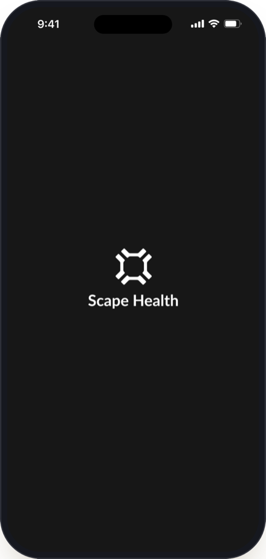
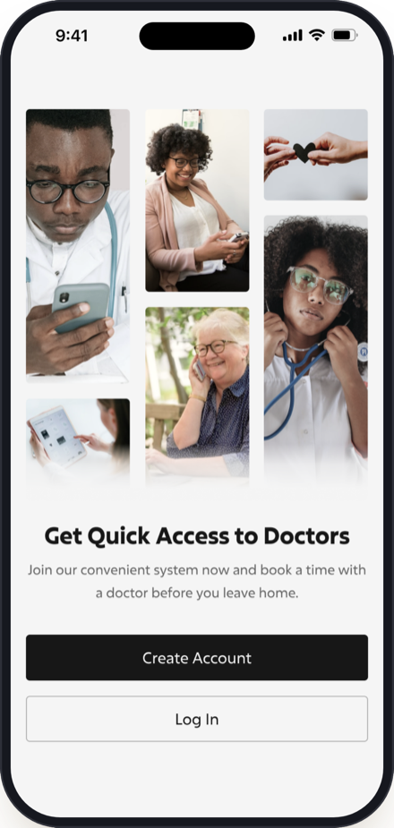
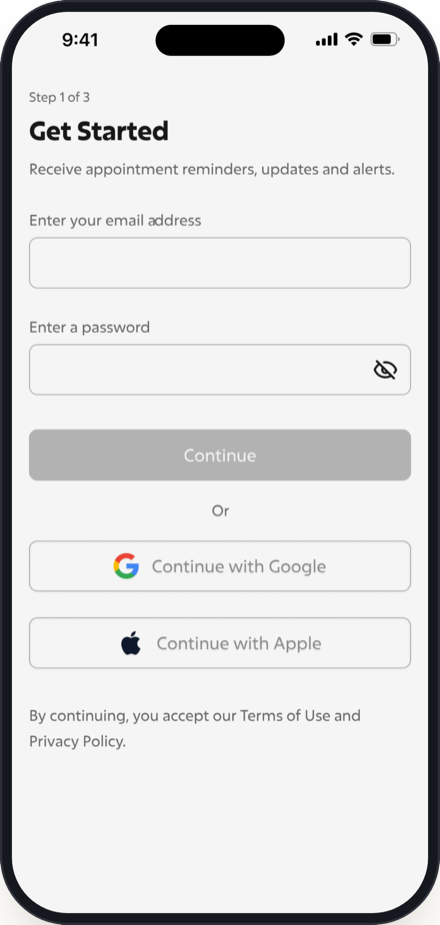
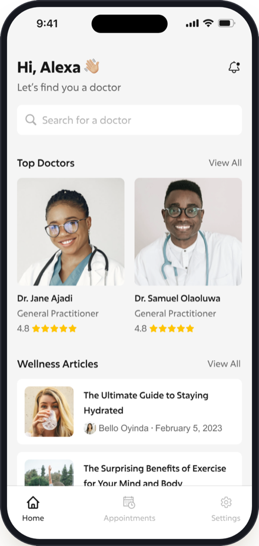
I started with two assumptions: most people find hospital visits stressful enough to put them off, and the answer would be some kind of digital tool. To test them, I interviewed four patients, two who mainly use public hospitals and two who use private ones, plus a doctor. I also reviewed research on online appointment booking in Nigerian teaching hospitals and looked at existing services, including Evercare, Reliance HMO and Vezeeta.
“Visiting the hospital is a stressful and time-consuming process that requires me to seek permission from work, and I always have to wake up very early to ensure I see the doctor on time. At the hospital, I often have to wait for several hours to see the doctor, and then I have to join a separate queue at the doctor’s office.” — Participant, creative writer
“I don’t like to visit the hospital at all, the waiting takes the most time. I go to the chemist for drugs if the condition is mild and speak to friends in the medical field if the ailment is severe.” — Participant, product manager
Booking turned out to be only part of the problem. Government hospitals are also short of doctors and resources, so no app could fix the wait on its own. The services that had made progress did it through insurance and access to nearby hospitals, not by changing how public hospitals work. I nearly stopped there. Instead, I decided to design for when the conditions are in place, starting with the part a product can fix.
I ranked the needs from the research using MoSCoW and checked each for feasibility, desirability and viability:
I also compared booking with virtual consultations. My original goal was to see a doctor without leaving home, but virtual care would need hospitals to change more than they currently can. Booking saves patients the most time and asks the least of hospitals, so it came first. Telemedicine would follow.
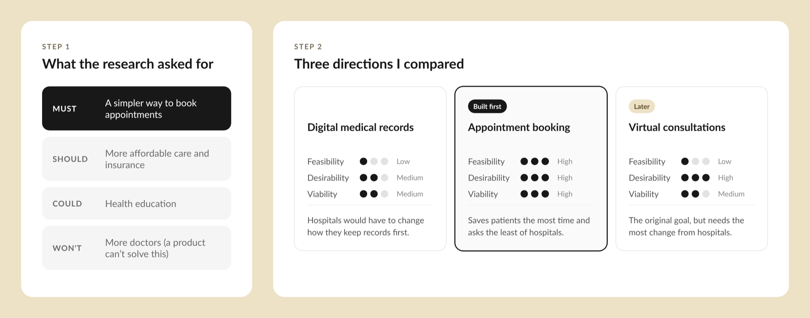
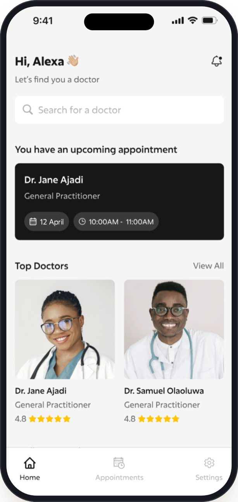
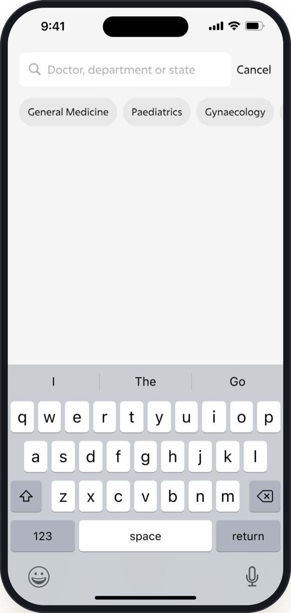
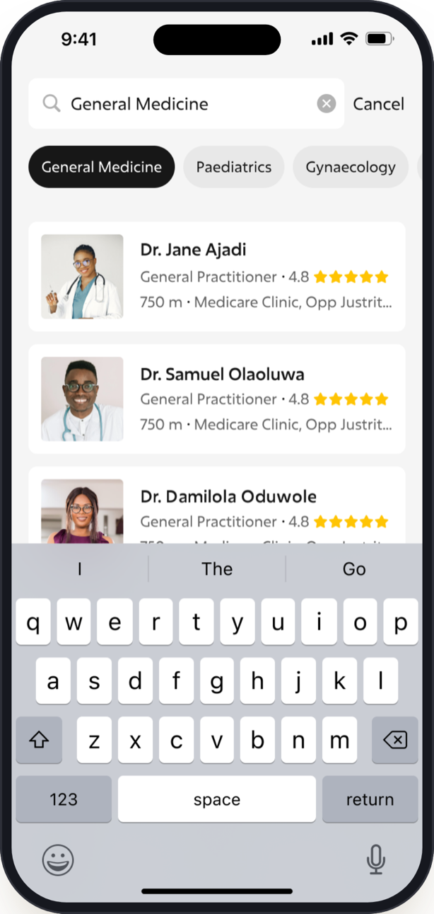
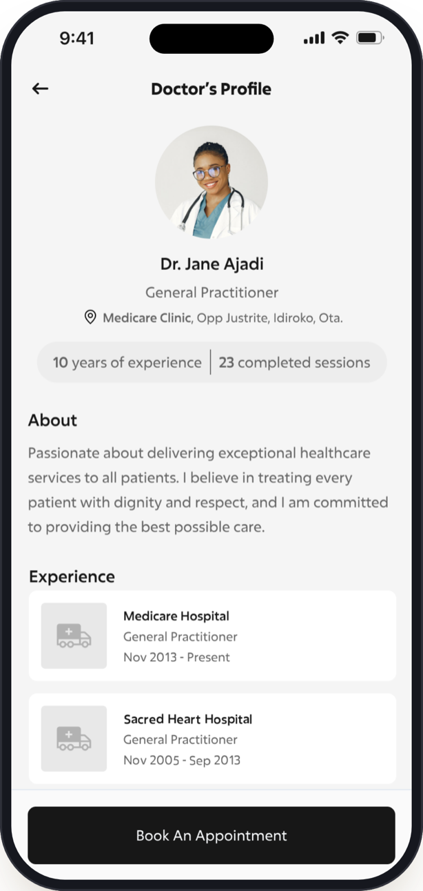
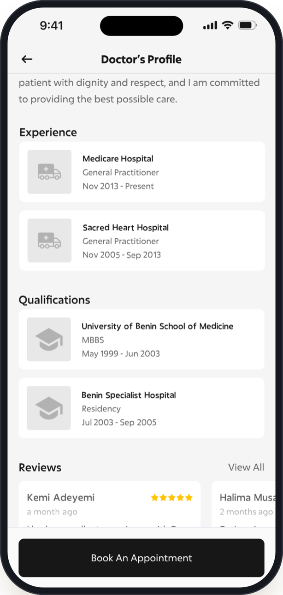
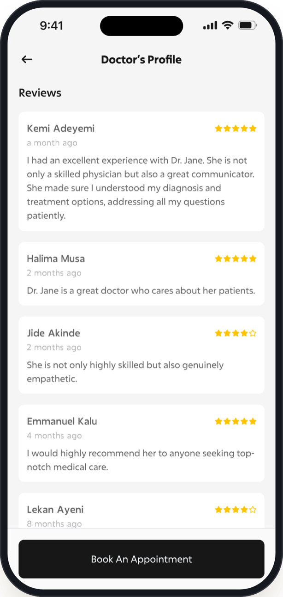
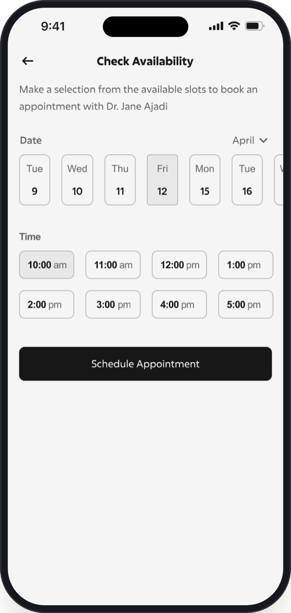
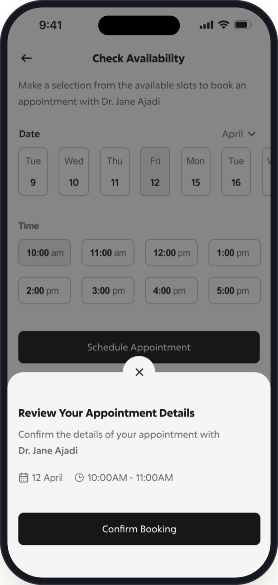
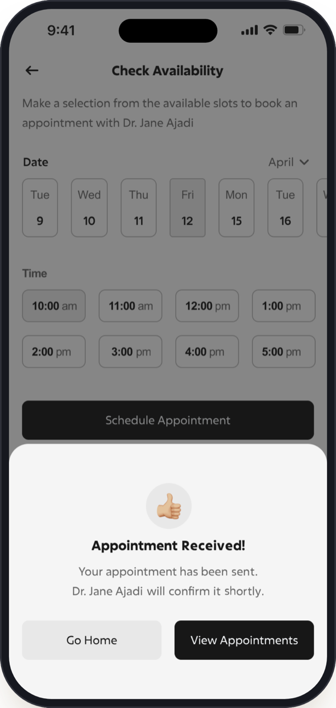
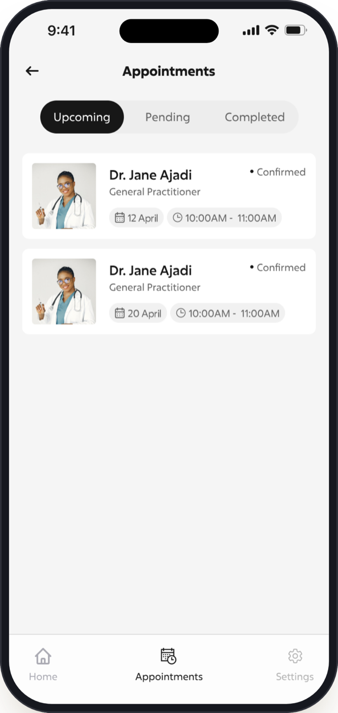
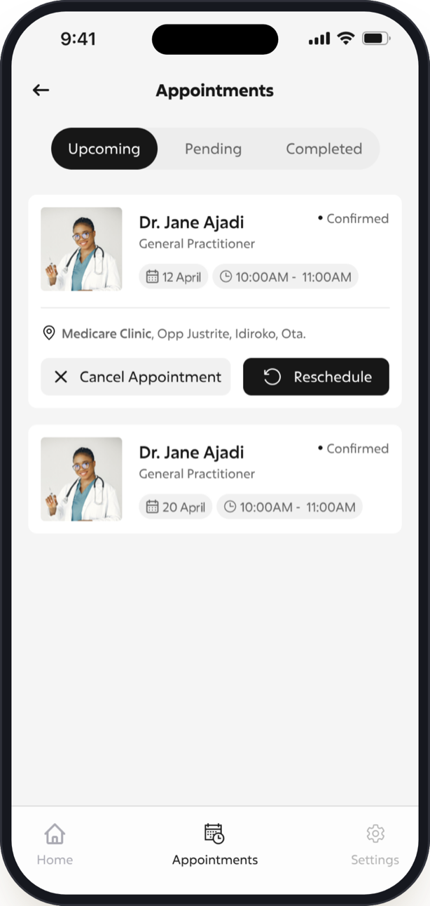
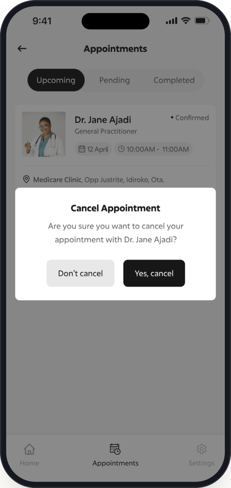
I tested the MVP with six users. Most found booking easy, but the tests showed five things to change:
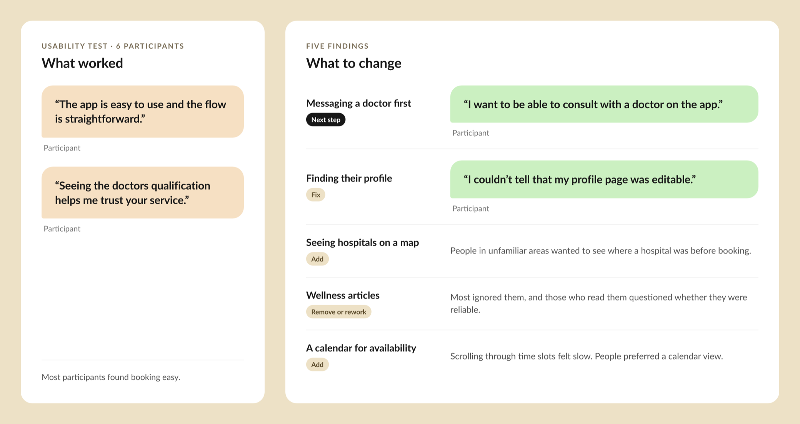
Messaging was in my very first sketch of this idea, and my ideation list included in-app messaging and telemedicine. I left them out of the MVP to focus on booking, and messaging came back as the most common request in testing. That matches what participants already do: they message a doctor on WhatsApp to decide whether they need to go in at all. A short message or triage step before booking would be my next step. I’d also add the calendar view and the map, make the profile easier to find, and either remove the wellness articles or have clinicians write them. Booking only works if doctors’ availability stays up to date, so I’d want to design the hospital side next.
Heroshe
Supplier Discovery & Procurement
Designed a supplier discovery and assisted buying experience that helps businesses source products faster and with less operational friction.
View Case Study